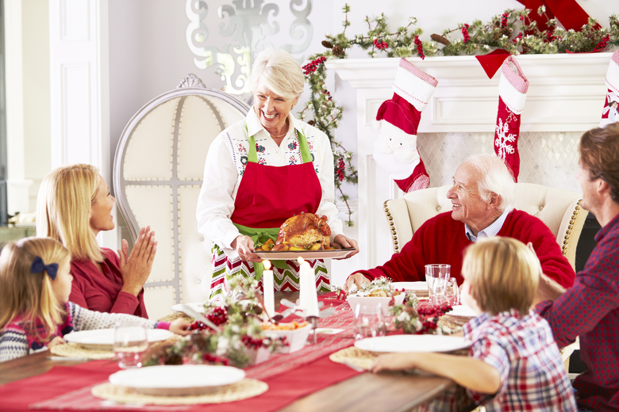
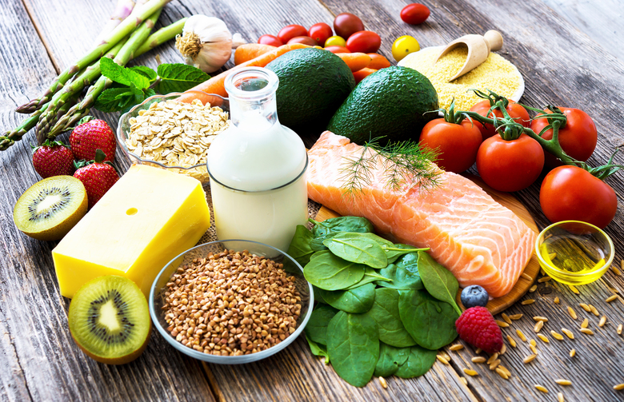

Здоровье
Удачное начало работы
после новогодних праздников
Новогодние праздники — это настоящее испытание даже для тех, кто питается правильно, ведет здоровый образ жизни и занимается спортом. После череды застолий, обильных угощений и коктейлей, вполне можно набрать пару лишних килограммов, ощутить вялость, тяжесть, усталость... Попытки прийти в форму через диеты, ограничения и изнурительные тренировки часто приводят к срывам, недовольству собой и стрессам. Чаще всего симптомы зимы, проигнорированные с наступлением первых холодов — в период осенне-зимнего межсезонья, начинают проявляться в начале января, когда внутренний баланс в организме, ослабленном продолжительными и не всегда здоровыми застольями, нарушается и перерастает в болезни. У нас есть отличная альтернатива — трехдневная программа домашнего очищения организма для снижения веса и восстановления энергии и баланса, разработанная нашим экспертом по детоксу и питанию — Мальцевой Юлией.
Особенности зимнего детокса
В зимнее время детокс режим существенно отличается от очищения в другое время года. Неправильно использовать одинаковые практики, техники и рецепты без учета сезона, ведь происходит смена климата, продуктов питания и потребностей организма.
Зима — это сезон холодов, ветров, опустения и суровости. Физически и эмоционально нам хочется свернуться калачиком и переждать до лучших времен. В этот период мы во всем стремимся к комфорту, теплу и расслаблению. Зимой организм занят не очищением, а скорее выживанием в условиях недостатка света, витаминов, движения, питания и радости. Зимой лучше всего отказаться от агрессивных чисток и крайних очистительных мер, а поддержать силы организма, насыщать, питать, ускорять метаболизм, разогревать соответствующими практиками. Детокс зимой не предполагает голодания или суровых ограничений. Составленная с учетом сезонных особенностей данная программа даст очень хорошие результаты даже в короткий срок.
Самое главное помните, что вы не должны избыточно очищаться, но вы можете вводить умеренные ограничения, чтобы использовать свои внутренние резервы до наступления благоприятного времени. Кроме того, детокс после новогодних праздников позволит вам укрепить иммунитет и противостоять вирусам и инфекциям, повысит продуктивность в начале рабочего года, улучшит самочувствие и внешний вид, наладит пищеварение, а еще поможет нейтрализовать стресс.
Зимний шоппинг
ля начала стоит пересмотреть список продуктов. На время детокса стоит исключить употребление:
— молочных продуктов в любом виде (кроме масла гхи); красного мяса, курицы, колбасных изделий, мясных консервов;
— молочных продуктов в любом виде (кроме масла гхи);
— глютенсодержащих злаков, включая пшеницу, овсянку, ячмень, рожь и продуктов, их содержащих;
— белого очищенного риса;
— сладких фруктов (ГИ выше 55) + клубника, виноград, бананы и все сухофрукты;
— жаренных блюд;
— любых подсластителей и сладостей: сахар, мед, кленовый сироп, сиропы с высоким содержанием фруктозы, шоколад;
— сладких напитков: газировка, сок, энергетические напитки;
— алкоголя, кофе, черного чая (заменить на зеленый чай не более 1-2 чашек в день);
— растительных белков: горох, фасоль, нут, чечевица, арахис;
— масел: сливочное масло, маргарин, рафинированные растительные масла (особенно рапсовое, арахисовое и хлопковое);
— приготовленных сильно крахмалистых овощей: картофель, свекла, тыква, брюква, репа.
Во время детокс-программы постарайтесь воздержаться от курения и приема медицинских препаратов (в частности, гормональных контрацептивов, таблеток от головной боли, мазей, кремов, содержащих эстроген и другие гормоны). Постарайтесь выбирать те продукты, которые являются сезонными и местными для вашего региона. Местными считаются продукты, произрастающие в радиусе 200 км от места вашего проживания. Исключение: кокосы, авокадо и орехи — это очень полезные продукты для детоксикации организма.